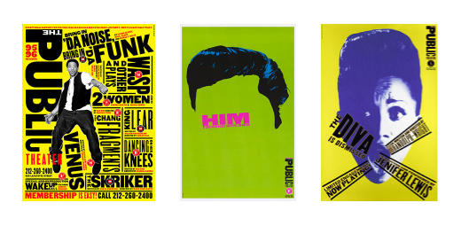
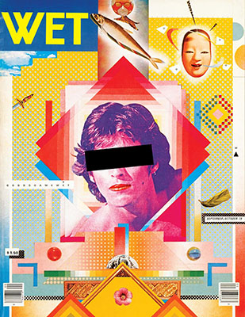
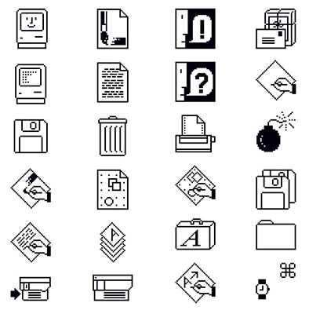
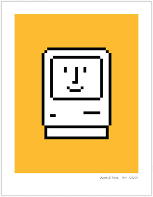

Introduction
The industry that is graphic design has mainly been male dominated from the beginning, resulting in a hard field for women to make their name in. The industry hasn’t always had the best reputation for gender equality and fairness; however, women have made significant changes and contributions in the field and have been for years and still do today! This essay researches the most influential women in graphic design and discusses how they used their many talents to shape the field and how they broke the ‘male- dominated’ ideas.
Paula Scher
Fig.1. Portrait of Paula Scher
Paula Scher (1948) is possibly one of the world's most well-known graphic designers. She has been such an important pioneer to the industry, ever since she started designing in the 70’s. Scher has challenged the established design hierarchical system, showing the world women can dominate in the world of graphic design.
The early days in her career Scher saw the difficulties she was going to face in this industry, for being a woman, discovering multiple times she was the only female in the room. She explained in an interview,
“I knew it was because I was a woman, and I knew that if it was a bigger job than the one I already had, I wouldn’t get it”
-Scher,2019
She didn’t let the gender inequality stop her from becoming one of the most influential graphic designers in the world. In 1991 she became the first female partner in Pentagram, making history and taking the industry in the right direction. Here she created worldwide recognised brand identities and publications, such as, Microsoft, the Museum of Modern Art, and Tiffany & Co.
Paula Schers' project 'Bring in da noise, Bring in da funk' put her name on the map (1995). This piece of work was all over New York City and it started a new typography craze, no one had experimented with type like this before.
Fig.2. A collection of Scher's graphic posters
“The goal of design is to raise the expectation of what design can be.”
-Scher,2015
Scher has won many awards throughout her career, in 2001 she even won one of the highest honour a graphic designer could achieve, the AGIA Medal. Her career has evolved and her disciplines have expanded from graphic designer, typography, to painting, 3D design, interior design and beyond. Paula Scher has made ground breaking contributions to graphic design and design as a whole, and she still does today.
April Greiman
Fig.3. A portrait of April Greiman
April Greimen (1948) is a worldwide recognised American designer and is known for being one of the first designers to take on computer technology and use it as a design tool. She enrolled at the Basel School of Design and became highly influenced by Swiss designer Wolfgang Weingart. It was here at Basel where she developed her design style and brought this style back to America in the late 1970's and early 1980's. She is considered one of the leading women pioneers of the new wave design style and Postmodernism in USA. As design critic Steven Heller states,
“April Greiman was a bridge between the modern and postmodern, the analog and the digital.”
-Heller,1998
Greiman was a design pioneer who embraced the digital shift that was happening when the Apple Mac was introduced in 1984. Greiman did not let this new technology and technique hinder her abilities and work, she pursued this line of work, which further benefited her career.
Fig.4. "Wet Magazine cover" by April Greiman
The work I have chosen to include clearly demonstrates Greiman’s amazing use of colour and her ability to use the new digital software to enhance her work further. She uses the software to create layers, multiple layers of images and text to create new and innovative graphic pieces of art. She mixed typography, photography and other mediums in her work, in random orders without hierarchies, and with this she uses an array of colours with various tones. This was a complete contrast to the traditional swiss style, she broke out of the ‘set’ rules and the grid design that was used to organise elements. Her style was influenced by postmodernism and the punk era and with this she designed freely.
Greiman currently runs the design consultancy Made in Space. Throughout her career and still to this day she sets a vital example for upcoming artists and women in the art world to never stop searching for new ways to create and to accept and adopt the new concepts in design. April Greiman demanded more recognition for woman designers, she and other advocacies still work hard today for woman designers and their influences. They contribute to the current gender landscape of the graphic design industry.
With the freedom Greiman had whilst designing she became one of the biggest pioneers that still sets an example for women in design and future generations of designers and encourages them to ask the questions that need to be asked.
Susan Kare
Fig.5. A portrait of Susan Kare
Susan Kare (1954) is an American graphic designer who famously designed the interface elements used on the first apple Macintosh during the 1980s. She studied fine art and further down her career she got a call to work for Apple, this resulted in her becoming one of the original members of the Apple Macintosh design team. Soon after she was promoted to creative director and now holds a PhD in design.
She originally didn't have any computer experience, but she had many years of graphic design experience and with these skills she designed iconic icons which were playful and whimsical, yet still intuitive. Kare's mother had kept Susan busy with embroidery and needlework when she was young, Kare transferred these skills to graph paper and there is where the icon designs began. Eventually these the icons were transferred to the screen. Her inspiration came from history books, toys and hieroglyphics, there were no applications at the time so they had to use a grid notebook and pen and the icons came to life!
Fig.6. A collection of icons by Susan Kare
Kare has a long list of successful designs that Apple have used, she designed multiple typefaces that were used on iPhones. She had many different inspirations that she utilised for her designs, she used a quirky Swedish road symbol for inspiration in the creation of the symbol on the command key that is still used on macs today.
Fig.7. "The happy Macintosh" by Susan Kare
“She is the woman who gave the Macintosh a smile.”
-Lange,2018
Kare transformed small, simple black and white pixels into a comprehendible symbol. I love how simple her icons are and how they don’t need to have copious amounts of detail in them to know what they are. According to Kare, good icons should be efficient like road signs. They should be easy to understand and refrain from confusing users by too much detail.
Kare worked with the computer despite this medium having many constraints and limitations but she used this to her advantage and became one of the first pixel artists and a pioneer for the artform. After working with Apple, she became a successful independent graphic designer. She did some famous work for Microsoft including designing the Windows’ solitaire game as well as numerous design elements and icons!
Her designs were revolutionary. Kare is known as the woman who gave the Macintosh a smile, with her famous happy mac icon. The icons she created shaped online design and we still use her designs today. It is clear that Susan Kare has became an iconic pioneer for women in graphic design.
Conclusion
How have these three women influenced graphic design over the years?
These women have contributed an immense amount to this field, pathed the way for women designers all over the world and they are only a small selection of the talented women who are helping to change the face of design. I believe that these women and many others have added so much to the field and the world has come a long way for equality in the arts, it is changing for the better! They each chose to do something different and this bravery aided their success. From Scher’s typography work, to Kare’s iconic icons and Grieman’s mixed media pieces. All three of the designers I mentioned in this essay have used their individual specialities and talents to create ground-breaking works of art that have influenced many over the years and will continue to influence for many years to come.
Bibliography
Books:
Documentaries:
Online:
Images: